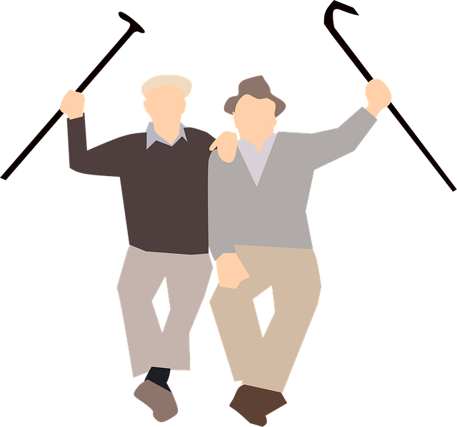

Grupos de Apoio
🔊 Ouvir informações dos grupos
1-UBS Vetorasso: Quarta-feira 13:00 às 14:00
2-UBS Tangará: Quinta-feira 13:00 às 14:00
3-UBS Eldorado: Sexta-feira 13:00 às 14:00
4-UBS Vetorasso: Segunda-feira 13:00 às 14:00
O grupo pode ser uma boa companhia e até trazer novas amizades.

VENHA PARTICIPAR!